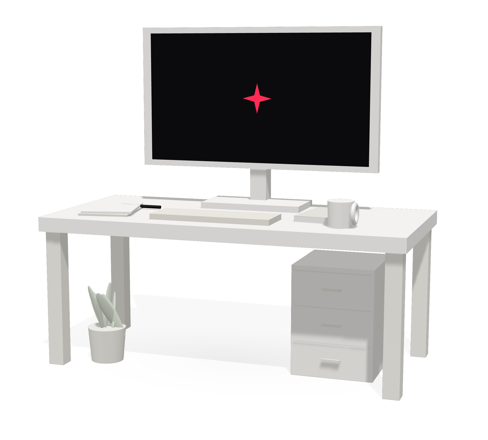

扫码连接
在电脑「设置 → 手机连接」中打开二维码，用相机扫描即可完成配对，地址与令牌会自动填入。
六位码
电脑上「设置 → 手机连接」显示的那六位数字，填进来就能连上。码十分钟内有效。
手动填写
仅在无法扫描时使用。令牌可在电脑「设置 → 手机连接」的二维码下方取得；此处无须与电脑处于同一网络。
没有电脑？先看看体验版 ›尚未连接
离线使用（可选）
留空亦可使用：电脑关闭时只能记事。填入云端密钥后，手机可依据缓存下来的记忆与性格自行应答。
Ta运行于你的电脑。
手机不保存记忆，仅作为连接本机界面的一扇窗。

在电脑上打开 Aster依次进入「设置 → 手机连接」，可取得配对二维码。
在手机上扫描二维码扫描完成后，地址与令牌将自动填入；若无法扫描，可在下方手动输入。
点击「保存并连接」此后即可查看对话、日程与记忆，与电脑端保持一致。
记忆、性格与日程都保存在电脑上。
手机不复存这些，它只是连过去的一扇窗。
在电脑「设置 → 手机连接」中打开二维码，用相机扫描即可完成配对，地址与令牌会自动填入。
电脑上「设置 → 手机连接」显示的那六位数字，填进来就能连上。码十分钟内有效。
仅在无法扫描时使用。令牌可在电脑「设置 → 手机连接」的二维码下方取得；此处无须与电脑处于同一网络。
没有电脑？先看看体验版 ›留空亦可使用：电脑关闭时只能记事。填入云端密钥后，手机可依据缓存下来的记忆与性格自行应答。